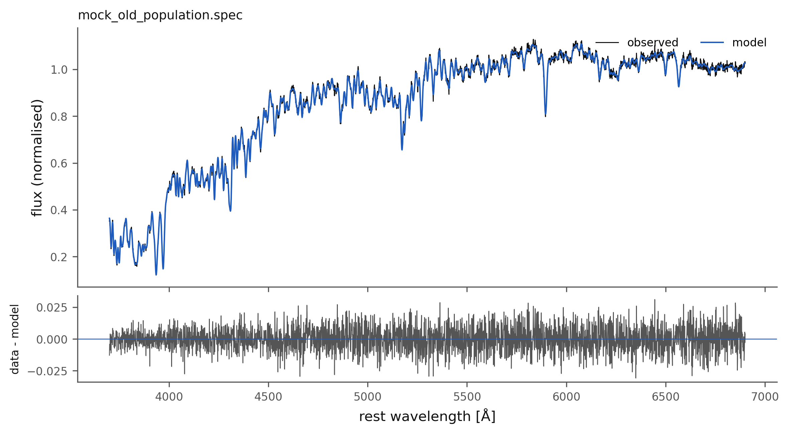
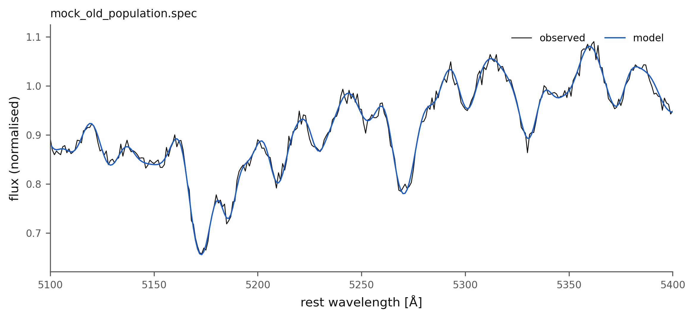
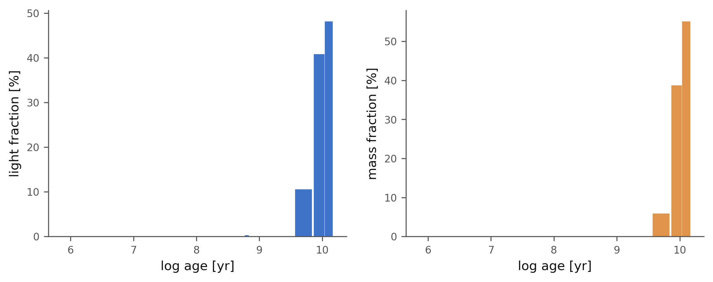

A first spectrum#
This tutorial fits the mock spectrum of an old, metal-rich stellar population, the kind of light an early-type galaxy emits, and checks every recovered number against the values the mock was built with: \(v_\star = 150\) km s⁻¹, \(\sigma_\star = 200\) km s⁻¹, \(A_V = 0.20\) and three populations of 5, 9 and 12.6 Gyr.
The whole tutorial as one file, ready to run: 01_first_spectrum.py.
The data#
import json
import brainsp
folder = brainsp.mock.write_examples("examples")
spectrum = f"{folder}/spectra/mock_old_population.spec"
brainsp.mock.write_examples() writes the five mock spectra and the mock datacube used by every tutorial (Mock data); it does nothing when they are already there.
The fit#
result = brainsp.fit_spectrum(spectrum, output_dir="fits", quiet=True)
print(result)
With no settings given, BRAIN fits with its defaults: the stars only (spop), the BasesGM library with all its 84 templates, between 3700 and 6900 Å.
The numbers, against the truth#
print(f"stellar velocity v0 = {result.v0:8.2f} km/s")
print(f"velocity dispersion sigma = {result.sigma:8.2f} km/s (observed)")
print(f"extinction A_V = {result.av:8.3f} mag")
print(f"<log age>_L = {result.mean_log_age_light:8.3f}")
print(f"<log age>_M = {result.mean_log_age_mass:8.3f}")
print(f"<Z>_L = {result.mean_metallicity_light:8.4f}")
print(f"chi2 / N_eff = {result.chi2:8.3f}")
truth = json.load(open(spectrum.replace(".spec", ".truth.json")))
print("\ntruth: v0 = {v}, sigma = {sigma}, A_V = {av}, <log age>_L = "
"{mean_log_age_light:.3f}".format(**truth))
The populations#
p = result.populations
used = p[p["x"] > 0.5]
print("\n x_j(%) mass_j(%) age (yr) Z")
for row in used:
print(f" {row['x']:6.2f} {row['mcor']:8.2f} {row['age']:10.3g} "
f"{row['Z']:.4f}")
print("\nfiles:", result.summary_file, result.fitted_file, sep="\n ")
What it printed#
Plot saved to fits/mock_old_population_fit.pdf
<FitResult mock_old_population.spec: v0=149.09 km/s, sigma=198.75 km/s, AV=0.2067, chi2=0.98676>
stellar velocity v0 = 149.09 km/s
velocity dispersion sigma = 198.75 km/s (observed)
extinction A_V = 0.207 mag
<log age>_L = 9.992
<log age>_M = 10.017
<Z>_L = 0.0219
chi2 / N_eff = 0.987
truth: v0 = 150.0, sigma = 200.0, A_V = 0.2, <log age>_L = 9.983
x_j(%) mass_j(%) age (yr) Z
7.63 4.15 5.01e+09 0.0190
20.73 18.48 8.91e+09 0.0190
48.19 55.15 1.26e+10 0.0190
2.96 1.85 5.01e+09 0.0315
20.15 20.33 8.91e+09 0.0315
files:
fits/mock_old_population_summary.txt
fits/mock_old_population_fitted.txt
The fit recovers the velocity to 1 km s⁻¹, the dispersion to 1 per cent and \(A_V\) to 0.007 mag, and the light-weighted mean age to 0.01 dex. The population vector puts the light in templates of 5, 9 and 12.6 Gyr, as the mock was built, though split between two metallicities: the age–metallicity degeneracy at work, which is why the mean age and metallicity are robust and single templates are not. \(\chi^2\) per pixel is 0.99, as it should be for a model that is right and errors that are honest.
Figures#
brainsp.plots.spectrum(result, "t01_spectrum.png")
brainsp.plots.spectrum(result, "t01_zoom.png", xlim=(5100, 5400), residuals=False)
brainsp.plots.sfh(result, "t01_sfh.png")

The fit of the old-population mock: the observed spectrum, the model, and the residuals in the lower panel.#

The same fit between 5100 and 5400 Å, around the Mg b triplet and the Fe lines that constrain the metallicity.#

The star formation history: the fraction of light (at 5500 Å) and of present mass in each age, summed over metallicity.#
What next#
Tutorial 2 adds the emission lines of a star-forming galaxy: Emission lines.